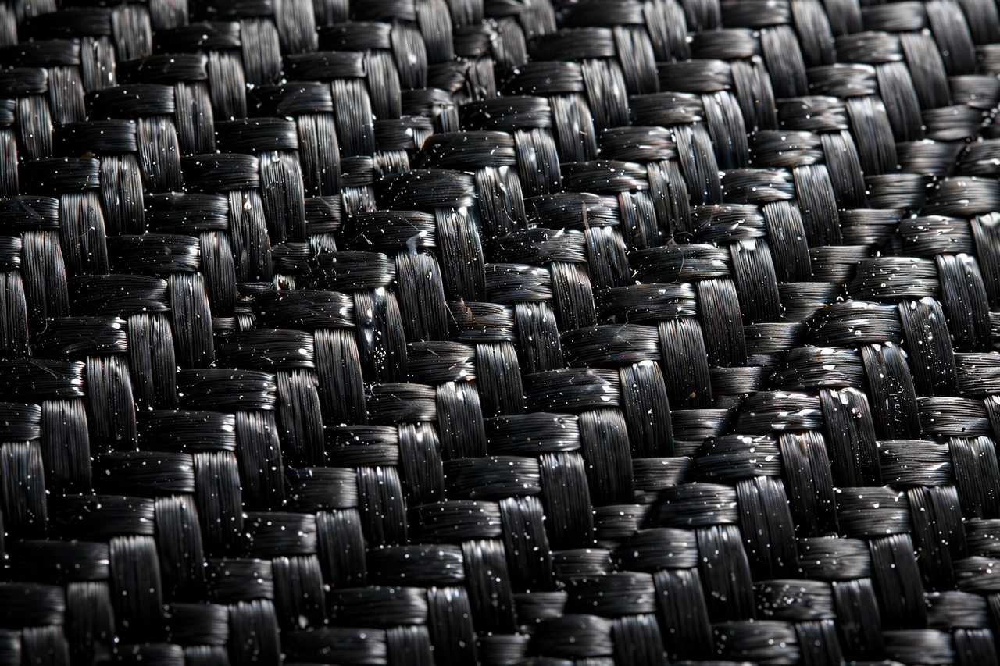

From Wikipedia, the free encyclopedia
| Carbon fibre | |
|---|---|
 Woven carbon-fibre cloth | |
| Composition | ≥92% carbon atoms in aligned graphitic crystals |
| Fibre diameter | 5–10 µm |
| Precursors | Polyacrylonitrile (PAN), pitch, rayon |
| Key properties | Very high strength-to-weight ratio, stiffness, thermal stability, low thermal expansion |
Carbon fibre (also spelled carbon fiber) is a material consisting of fibres about 5–10 micrometres in diameter composed mostly of carbon atoms bonded in microscopic crystals aligned along the fibre axis. Thousands of filaments are bundled into a tow, which may be woven into fabric or used directly. Combined with a polymer matrix — usually epoxy — it forms carbon-fibre-reinforced polymer (CFRP), a composite remarkable for its strength and stiffness at very low weight.
Most commercial fibre is made from polyacrylonitrile (PAN). The precursor is spun into filaments, stabilised by heating in air (200–300 °C), then carbonised in an inert atmosphere at 1,000–3,000 °C, driving off non-carbon atoms and aligning graphitic ribbons along the fibre. Higher treatment temperatures yield stiffer, more graphitic (high-modulus) fibres; intermediate temperatures maximise tensile strength, which can exceed 6 GPa in top grades. A surface treatment and sizing are applied so the fibres bond to resin.
CFRP has a higher strength-to-weight ratio than steel or aluminium, excellent fatigue resistance and near-zero thermal expansion along the fibres, but it is expensive, brittle in impact compared with metals, electrically conductive (raising galvanic-corrosion issues with aluminium) and difficult to recycle. It is used where weight is critical: aircraft structures (the Boeing 787 and Airbus A350 use composites for about half their structural weight), Formula 1 monocoques, spacecraft, wind-turbine blades, high-end bicycles, prosthetics, pressure vessels and sporting goods.
Carbon filaments were made for lamp bulbs by Joseph Swan and Thomas Edison in the 19th century. Modern high-performance fibre dates to the late 1950s and 1960s: rayon-based fibres in the US, Akio Shindo's PAN-based process in Japan (1961), and the Royal Aircraft Establishment process at Farnborough (1963–64) that British and later Japanese industry (notably Toray) commercialised in the 1970s.